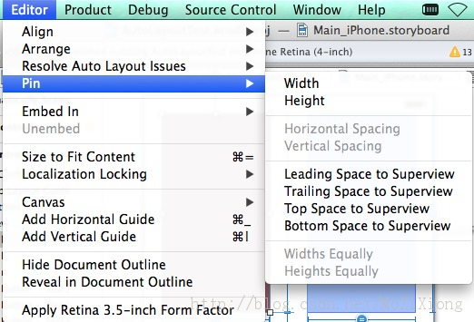
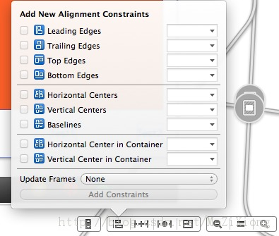

Autolayout中的Visual format language
一.什么时候用autolayout比较适合
１.不负责任的骑墙派说法：apple的设备越来越多了，你的应用应该都使用al。（并且用sb）
２.要看应用内容决定。如果你的内容是信息众多，同时需要展示的类别也很多，尺寸动态不定，甚至这些是在列表中的。（如社交应用）。Al能给于很大的帮助。
３.Mac os的应用。现在都做iOS了。mac app的窗口，会有大小变化。al比较合适。
４.支持多向转屏的iPad应用。（有需要支持多方向iphone场景么？那么长，脑残了？）
５.其他业务不复杂,页面较少的应用，其实，cocoa程序员写了多年code都有自己的ui编程习惯，这些习惯对于他们来说是很高效的。就算是第一项所说，布局的坐标都是相对的。
如果是习惯于code写布局的，建议可以继续沿用，同时也要学习al。自我感觉al和传统布局写法，工作量不会相差太多。但是VFL用熟练了以后会有很大的改善。
二.autolayout的基础理论
al的核心出发点是
1.view具有自我计算尺寸，布局的能力。通过它自身的内容，能够得到尺寸。
2.view的布局位置，确定于它与superview及其他view的关系。
3.与传统的autoresizingmask自适应相比，al更精确，能绝对的确定view的布局。
4.view不一定需要一个初始的rect。al中，view如果有足够的constraint，便可以确定自己的尺寸和位置，并且知道自己和其他view的关系。即，想确定view的布局，就给它（们）添加constraint。
三.xib下的autolayout
似乎al和xib布局模式生来就是要搞在一起的。用xib加al，view布局非常简单容易。编程工作立刻变成了美工的连线拼图游戏。
开启xib或者sb后，选择需要view(s)。选择menu的Editor，选择Pin。子菜单的项目就是可用的constraints

Width:固定自身宽度
Height:。。。
H- Spacing: 固定两个view的水平间距
V- Spacing:。。。
下面４个分别是view相对于superview的左、右、上、下的间距
Widths Equally:两个view保持宽度相同
Heights Equally:。。。
xib界面右下角工具条也有可以编辑constraint的方式：

每个constraint添加后都是可以编辑的。选中某个constraint后开启右边栏选inspector。可以修改数值。（这个数值是view间的偏移量）和优先级。
自己慢慢拖着玩去。这不是傻瓜教程。点到位，自己研究。
xib下的al比较直观。可以基本看到效果和误差值。还有不正确的constraint的提示。少了constraint编译器会补，多了会提示报错。 （不过都会引起界面布局不对，自己慢慢调吧，哥现在还是满篇alert，没有让编译器感觉矛盾费解的constraint，都是可以work的。）
还有resolve的方式解决constraint的问题，抱歉，我不会。
四.编码方式使用autolayout
对于页面不多，的普通应用。xib/sb加al。拖拖拽拽。娱乐中就可以完成UI的工作。al的确给于了不少方便。
不过多年的强迫症程序猿怎么会忍受这种很逊的方式。（拖积木？不敲代码？好像一天没做事。）
1.Visual format language （应该不算语言）
Apple的工程师很有爱，发明了这种哭笑不得的象形文字。感觉它就是种解析方式。
Apple的官方文档给出了少之又少的文档和坑爹的例子。（视频我没看，不知道怎么样）网上的同学们也写了点不痛不痒的几句代码。你这是学了１＋１就让人搞微积分的节奏么？要写不写清楚，不如不写。
从厚道的老外那看了几篇。自己体会了些，分享给大家。只是个基本水平吧，会了这些，代码写al应该没有问题了。深入的我也还不会，希望遇到更有爱的牛人分享。
VFL在程序中由支持：
-
(NSArray *)constraintsWithVisualFormat:(NSString *)format options:(NSLayoutFormatOptions)opts metrics:(NSDictionary *)metrics views:(NSDictionary *)views;
-
它返回一组constraint.
-
format是你的VFL字串，等下讲。
-
opts自己点去头文件看。有些情况会用，等下有例子。
-
metrics是一个奇妙的字典，是你自己定义的。这个字典里面的key可以写在format字串中。编译器解析时，自动替换为metrics字典中的value。等下有例子。
-
views是需要constraint关系的所有view.(也可以是一个)
2.VFL例子
写vfl字串的时候，脑海里要想象出画面的合理性。不合理的constraint会导致程序运行时报错或者直接崩溃。
随便写几个
NSDictionary *dict1 = NSDictionaryOfVariableBindings(_boxV,_headerL,_imageV,_backBtn,_doneBtn);
NSDictionary *metrics = @{@"hPadding":@5,@"vPadding":@5,@"imageEdge":@150.0};
NSString *vfl = @"|-hPadding-[_boxV]-hPadding-|";
NSString *vfl0 = @"V:|-25-[_boxV]";
NSString *vfl3 = @"V:|-vPadding-[_headerL]-vPadding-[_imageV(imageEdge)]-vPadding-[_backBtn]-vPadding-|";
dict1就是api 中需要的最后一个参数views。由上述宏来完成。
metrics定义了一些vfl中要用的参数。
下面有些vfl字串，一看便知如何使用metrics。
看到：
| 1)” | “表示superview. |
| ” | -间距-[view1对象名]-(>=20)-[view2对象名]” |
“不写H/V就表示横向，间距可以写固定值也可写>/<。”
| “形象化的理解，” | “是用来确定view上、下、左、右关系的” |
| “想要确定从上到下的关系，就加V: | 。那么这个vfl字串就可以描述从上到下的view们的关系” |
| 2)看到vfl3里面，方括号表示view，圆括号表示尺寸数值。支持大小等于。或者另一个view | -[view1(view2)]，v１的宽度等于v２。 |
| 3)优先级用＠表示。如V: | -50@750-[view(55)]，或者写到metrics里面更好。 |
具体定义查看UILayoutPriority。有几个固定的数值。1000表示必须支持。
4)options，这个要看具体需要。如果是竖排V布局，可以添加NSLayoutFormatAlignAllLeft，让他们对齐。
| 根据需要也可以添加按位或NSLayoutFormatAlignAllLeft | NSLayoutFormatAlignAllRight。（鬼知道什么需要，自己看经验吧） |
5)写好以后一般把constraint添加给superview：
NSString *vfl1 = @"|-hPadding-[_headerL]-hPadding-|";
[self.view addConstraints:[NSLayoutConstraint constraintsWithVisualFormat:vfl1 options:0 metrics:metrics views:dict1]];
6)还有一个api用于生成单个constaint
+(id)constraintWithItem:(id)view1 attribute:(NSLayoutAttribute)attr1 relatedBy:(NSLayoutRelation)relation toItem:(id)view2 attribute:(NSLayoutAttribute)attr2 multiplier:(CGFloat)multiplier constant:(CGFloat)c;
对于参数，记得，view1.attr1 = view2.attr2 * multiplier + constant就好。 这个是不用VFL的，好理解，但是不方便。如果用这个写。工作两不会比传统布局少多少。
五.实际操作中的问题 上面都是理论，世界操作会有些奇怪的问题要注意。这节才是重点。
xib模式，没啥要注意的，xib里报warning就报吧，我也不知道怎么弄，一切正常就好。
编码模式中，
1.addConstraint(s)前，view应该去部被addSubView上去了。
2.不必给views写frame
3.给必要的view关掉AutoresizeingMask。[_aView setTranslatesAutoresizingMaskIntoConstraints:NO];
4.UILabel换行要写linebreakMode,要写numberOfLines(iOS7.0默认好像是1，坑爹了)
5.UILabel要想换行，一定要添加preferredMaxLayoutWidth。否则没法初始化宽度。
编码模式感受到的最大方便。label换行不用写行高计算了。完全自动适应。label所在的superview也会自动计算rect。这才是al的精华。
所以，可以不用写这些了：
我遇到了些问题，至今没有解决：
纯代码写的Viewcontroller 无法正常显示al布局。用空白的xib做了vc后，其余再用code写，就正常了。怀疑自己写的self.view，还需要针对autolayout做什 么处理。至此，al，基本功能已经可以为你服务了。的确方便很多，建议还是使用VFL代码模式，熟练后能够提高很多效率。
```objc [NSLayoutConstraint constraintsWithVisualFormat:
options:metrics:
views:
]; ```
constraintsWithVisualFormat:参数为NSString型，指定Contsraint的属性，是垂直方向的限定还是水平方向的限定，参数定义一般如下：
| V: | -(>=XXX) :表示垂直方向上相对于SuperView大于、等于、小于某个距离 |
若是要定义水平方向，则将V：改成H：即可
在接着后面-[]中括号里面对当前的View/控件 的高度/宽度进行设定；
options：字典类型的值；这里的值一般在系统定义的一个enum里面选取
metrics：nil；一般为nil ，参数类型为NSDictionary，从外部传入 //衡量标准
views：就是上面所加入到NSDictionary中的绑定的View
在这里要注意的是 AddConstraints 和 AddConstraint 之间的区别，一个添加的参数是NSArray，一个是NSLayoutConstraint
使用规则
| : 表示父视图 |
-:表示距离
V: :表示垂直
H: :表示水平
= :表示视图间距、宽度和高度必须大于或等于某个值
<= :表示视图间距、宽度和高度必须小宇或等于某个值
== :表示视图间距、宽度或者高度必须等于某个值
@ :>=、<=、== 限制 最大为 1000
-
-[view]- : 视图处在父视图的左右边缘内 -
-[view] : 视图处在父视图的左边缘 -
[view] : 视图和父视图左边对齐
4.-[view]- : 设置视图的宽度高度
-
-30.0-[view]-30.0- : 表示离父视图 左右间距 30
6.[view(200.0)] : 表示视图宽度为 200.0
-
-[view(view1)]-[view1]- :表示视图宽度一样，并且在父视图左右边缘内 -
V: -[view(50.0)] : 视图高度为 50
| 9: V: | -(==padding)-[imageView]->=0-[button]-(==padding)- | : 表示离父视图的距离 |
为Padding,这两个视图间距必须大于或等于0并且距离底部父视图为 padding。
10: [wideView(>=60@700)] :视图的宽度为至少为60 不能超过 700 ，最大为1000
11: 如果没有声明方向默认为 水平 V: